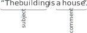
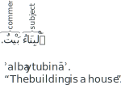

Not ready for study.
4 The subject-comment sentence
4.1 Introduction
In this chapter we will learn about a class of sentences called subject-comment sentences. Subject-comment sentences consist of two parts:
- The subject. This is the topic of the sentence.
- The comment. This gives us some information about the subject.
4.2 Forming subject-comment sentences
Here is a subject-comment sentence:
The subject of the sentence is “the building”. This means that the sentence is about “the building”.
The comment is “a house”. This means that the comment that the sentence is giving us about the subject is that it is “a house”.
Let’s try to form this sentence in Arabic.
First we assemble the individual parts:
- “The building” in Arabic is ٱَلْبِنَاء ʾalbināʾ (masc.).
- “A house” is بَيْت bayt (masc.).
Next we put them both in the raised-state. For subject-comment sentences, both the subject and the comment shall be in the raised-state. Remember that the raised-state is formed by putting a tanwīned ḍammah ◌ٌ at the end of an indefinite noun, and a ḍammah ◌ُ at the end of a definite noun. Here are the two nouns in the raised-state:
- ٱَلْبِنَاءُ ʾalbināʾu (masc.) “the building” (raised-state)
- بَيْتٌ baytun (masc.) “a house” (raised-state)
In order to form this sentence in Arabic, we put the subject first and then the comment. So we get:
But wait! Where is the Arabic word for “is”? It turns out that Arabic does not usually express any word for “is”. Instead, the meaning of this word is implied.
Also, note that the final vowel mark at the end of the sentence is written but not pronounced. So we will write بَيْتٌ but say bayt, not baytun. This is in accordance with what we learned in section @ref(pronouncing-the-end-of-a-sentence).
Now let’s try reversing this sentence, and try making the sentence:
“The house is a building.”
We follow the same procedure by assembling the individual parts of the sentence and putting them in the raised-state:
- The subject: ٱَلْبَيْتُ ʾalbaytu (masc.) “the house” (raised-state)
- The comment: بِنَاءٌ bināʾun (masc.) “a building” (raised-state)
And then we put them together, first the subject and then the comment:
ٱَلْبَيْتُ بِنَاءٌ.
ʾalbaytu bināʾ.
“The house is a building.”
and there we have our sentence.
4.3 Matching the gender between the subject and the comment
In the sentences above, both the subject and the comment were masculine nouns. Now let’s try forming a sentence where the subject and the comment have different genders. Let’s try saying:
“The building is a school.”
- The subject: ٱَلْبِنَاءُ ʾalbināʾu (masc.) “the building” (raised-state)
- The comment: مَدْرَسَةٌ madrasatun (fem.) “a school” (raised-state)
In the same manner as before, we form the sentence by first writing the subject and then the comment:
ٱَلْبِنَاءُ مَدْرَسَةٌ.
ʾalbināʾu madrasah.
“The building is a school.”
We can also reverse this sentence:
ٱَلْمَدْرَسَةُ بِنَاءٌ.
ʾalmadrasatu bināʾ.
“The school is a building .”
So we see that it is quite normal to have a sentence where the gender of the subject does not match the gender of the comment. This is because the words we have dealt with so far denote animate objects. If either the subject or the comment denote animate beings, then in this case the subject and the comment often do match each other in gender. For example, let’s try to form the sentence:
“The mother is a teacher.”
Here are the indiviual words that we will use to form the sentence:
The subject: “the mother”: ٱَلْأُمُّ ʾalʾummu (fem.) (raised-state).
The comment: “a teacher”. We have two words for “a teacher” in Arabic:
- مُعَلِّم muɛallium (masc.) “a (male) teacher”
- مُعَلِّمَة muɛallimah (fem.) “a (female) teacher”.
Obviously, مُعَلِّمَة muɛallimah would apply here so we put it in the raised-state: مُعَلِّمَةٌ muɛallimatun (raised-state).
Now we can assemble the sentence:
ٱَلْأُمُّ مُعَلِّمَةٌ.
ʾalʾummu muɛallimah.
“The mother is a teacherf.”
In the reverse sentence “The teacher is a mother.”, we again use the feminine noun مُعَلِّمَة muɛallimah (fem.) “a (female) teacher”, which is now the subject of the sentence, to match the feminine noun in the comment ٱَلْأُمّ ʾalumm (fem.) “a mother”. So we get:
ٱَلْمُعَلِّمَةُ أُمٌّ.
ʾalmuɛallimatu ʾumm.
“The teacherf is a mother.”
Here is another example:
ٱَلرَّجُلُ أَبٌ.
ʾarrujulu ʾab.
“The man is a father.”
Now, let’s try a sentence where we are still dealing with animate beings but the nouns mismatches in grammatical gender.
ٱَلْأُمُّ شَخْصٌ.
ʾalʾummu s͡hak͡hṣ.
“The mother is a person.”
ٱَلشَّخْصُ مُعَلِّمَةٌ.
ʾas͡hs͡hak͡hṣu muɛallimah.
“The person is a (female) teacher.”
ٱَلْمُعَلِّمَةُ شَخْصٌ.
ʾalmuɛallimatu s͡hak͡hṣ.
“The (female) teacher is a person.”
In the above examples, the grammatical genders mismatch between the subject and the comment. But this is because we are matching with the physical gender of the person represented by the masculine noun شَخْص s͡hak͡hṣ “a person”, not its grammatical gender.
The same effect is seen when using the word حَيَوان ḥayawān which is a masculine noun meaning “an animal”. It can be applied to both male and female animals. So we can say:
ٱَلْحَيَوَانُ هِرٌّ.
ʾalḥayawānu hirr.
“The animal is a (male) cat.”
and
ٱَلْحَيَوَانُ هِرَّةٌ.
ʾalḥayawānu hirrah.
“The animal is a (female) cat.”
4.4 Detached pronouns
Pronouns, in Arabic, are special nouns that can be used in place of other nouns when it is known who is being referred to. This means that they can replace definite nouns only. Pronouns in English include words like “he”, “she”, “it”, “you”, “I”, etc.
In order to explain the usage of pronouns, we will first show a sentence with a noun subject:
“The man is a teacher.”
Now we you can replace the definite subject noun “the man” with the pronoun “he”:
“He is a teacher.”
In Arabic there are a few different kinds of pronouns. Here we will learn detached pronouns. They are called detached pronouns because they are detached from other words. There are another set of pronouns called attached pronouns that we will learn later, if Allāh wills.
4.4.1 Participants
When talking about pronouns, it is beneficial to make use of a concept of grammar called participants.
In any kind of speech there are there can be up to three types of participants involved. A participant may be singular, i.e. consist of one individual, or plural, i.e., consist of more than one individual.
The three participants in speech are:
- The speaker-participant. This is the participant who is speaking. When the speaker-participant refers to himself or herself (or themselves if plural) in English, then he/she/they use the pronouns “I”, “me”, “we”, and “us”.
- The addressee-participant. This is the participant whom the speaker-participant is directly speaking to. When the speaker-participant refers to the addressee-participant in English, he uses the “you” pronoun.
- The absentee-participant. This is the participant who is not being directly spoken to. Their only participation in the speech is that they are being referred to. When the speaker-participant refers to the absentee-participant in English, he uses the pronouns “he”, “him”, “she”, “her”, “it”, “they”, and “them”.
In this chapter we will learn the Arabic pronouns for the singular participants.
4.4.2 Detached pronouns for the singular absentee-participant
Here are the Arabic detached pronouns for the singular absentee-participant:
- singular masculine absentee-participant: هُوَ huwa “he”.
- singular feminine absentee-participant: هِيَ hiya “she”.
Here are some examples of pair of sentences, each first with a noun, and then with a pronoun in place of the noun:
ٱَلرَّجُلُ مُعَلِّمٌ.
ʾarrajulu muɛallim.
“The man is a teacherm.”هُوَ مُعَلِّمٌ.
huwa muɛallim.
“He is a (male) teacherm.”ٱَلْجَارِيَةُ طَالِبَةٌ.
ʾaljāriyatu ṭalibah.
“The girl is a studentf.”هِيَ طَالِبَةٌ.
hiya ṭalibah.
“She is a studentf.”ٱَلْبَيْتُ بِنَاءٌ.
ʾalbaytu bināʾ.
“The house is a building.”هُوَ بِنَاءٌ.
huwa bināʾ.
“It is a building.”Note that Arabic uses the pronoun هُوَ huwa “he” to refer to the inanimate object “the house”. This is because, as we know, all nouns in Arabic are either masculine or feminine. In translating the sentence to English we will employ the neutral pronoun “it” to make the sentence sound natural.
ٱَلْبِنَاءُ مَدْرَسَةٌ.
ʾalbināʾu madrasah.
“The building is a school.”هُوَ مَدْرَسَةٌ. huwa madrasah.
or
هِيَ مَدْرَسَةٌ. hiya madrasah.
“It is a school.”Note that either هُوَ huwa “he” or هِيَ hiya “she” can be used in the above sentence because the gender of the subject ٱَلْبِنَاء ʾalbināʾ (masc.) “the building” mismatches the gender of the comment مَدْرَسَة madrasah (fem.) “a school.”.
In such cases where the genders of the subject and the comment do not match, then, generally speaking, the pronoun for either gender could be employed with the following guideline:
Prefer to match the gender of the subject pronoun with the gender of the comment, unless the noun being replaced with a pronoun is an animate being, in which case prefer to use the gender of the animate being.
So in the above sentence we will prefer to use هِيَ مَدْرَسَةٌ. hiya madrasah. because the comment مَدْرَسَةٌ madrasatun “a school” is feminine.
Here is an example with an animate being as the subject:
ٱَلْجَارِيَةُ إِنْسَانٌ.
ʾaljāriyatu īnsān.
“The girl is a human.”هِيَ إِنْسَانٌ.
hiya īnsān.
“She is a human.”Here, if we replace the noun ٱَلْجَارِيَة ʾaljāriyah “the girl” with a pronoun, we will prefer to use هِيَ hiya “she”, because the girl is an animate being, even though the comment إِنْسَانٌ ʾinsānun “a human” is masculine.
4.4.3 Detached pronouns for the singular addressee-participant and speaker-participant
Here are the pronouns for the singular addressee-participant and speaker-participant:
- singular masculine addressee-participant: أَنْتَ ʾanta “youm”.
- singular feminine addressee-participant: أَنْتِ ʾanti “youf”.
- singular speaker-participant: أَنَا ʾana “I”.
Note that the addressee-participant pronoun “you” has separate pronouns for the masculine and the feminine while the speaker-participant pronoun “I” has the same pronoun for both genders. Examples with these pronouns:
أَنْتَ مُعَلِّمٌ.
ʾanta muɛallim.
“Youm are a teacherm.”أَنْتِ مُعَلِّمَةٌ.
ʾanti muɛallimah.
“Youf are a teacherf.”أَنَا مُعَلِّمٌ.
ʾana muɛallim.
“I am a teacherm.”أَنَا مُعَلِّمَة.
ʾana muɛallimah.
“I am a teacherf.”
4.4.4 Definiteness of pronouns
We stated, and saw, that pronouns can replace definite nouns. This means that pronouns themselves are definite nouns (even though they are not prefixed by ٱَلْ ʾal “the”).
This fact will be useful in later chapters, if Allāh wills.
4.4.5 Rigidity of pronouns
Remember in section @ref(flexibility-of-nouns), we talked about the flexibility of nouns. We said that nouns whose endings change with the noun’s state are called flexible nouns. Most nouns fall into this category.
Pronouns, however, are nouns whose endings don’t change with their state. Therefore they fall into the category of rigid nouns.
4.5 A definite noun as the comment
In all the examples so far, the comment has been an indefinite noun: “a building”, “a teacher”, “a cat”, etc. It is also possible for the comment to be a definite noun:
ٱَلرَّجُلُ ٱلْمُعَلِّمُ.
ʾarrajulu -lmuɛallim.
“The man is the teacherm.”
The above sentence, although correct, is ambiguous. It can also be interpreted as a noun-phrase, meaning “the teacher-man”, instead of the complete sentence “The man is the teacherm.” Therefore, in order to disambiguate and make it clear that we mean the complete sentence, a disambiguating pronoun is usually (but not always) inserted between the subject and the comment. Disambiguating pronouns are detached pronouns that match the subject of the sentence in gender. With a disambiguating pronoun, the sentence above becomes:
ٱَلرَّجُلُ هُوَ ٱلْمُعَلِّمُ.
ʾarrajulu huwa -lmuɛallim.
“The man is the teacherm.”
The disambiguating pronoun here is هُوَ huwa and is not translated. Here are some more examples of sentences with definite comments and disambiguating pronouns.
ٱَلْبَيْتُ هُوَ ٱلْبِنَاءُ.
ʾalbaytu -lbināʾu.
“The house is the building.”
ٱَلْحَيَوَانُ هِيَ ٱلْهِرَّةُ.
ʾalḥayawānu hiya -lhirratu.
“The animal is the cat.”
4.6 An indefinite noun as the subject
In all the sentences we have seen so far, the subject has always been a definite noun. This is usually the case. A subject needs a certain amount of weight in order to be the first word in a sentence. And being definite gives it this needed weight. That is: “the man” is grammatically heavier than “a man”. So it is easier to start a sentence with “the man”.
So can we even have a sentence that has an indefinite subject? For example:
- A house is a building.
- A man is the teacher.
Yes, it is possible, but sentences where the subject is an indefinite noun are not as straightforward to express in Arabic. We will explore some ways of expressing them later if Allāh wills.
4.7 وَ wa- “and”, فَ fa- “so”/“and then”, and أَوْ ʾaw “or”
4.7.1 وَ wa- “and”
Arabic uses the particle وَ wa to mean “and”. Being a one-letter particle, it is joined to the word after it without any space between it and the next word.
وَمَدْرَسَةٌ
wamadrasatun
“and a school”
وَ wa meaning “and” does not change the state of the noun following it. Examples:
ٱَلْبِنَاءُ مَسْجِدٌ وَمَدْرَسَةٌ.
ʾalbināʾu masjidun wamadrasah.
“The building is a mosque and a school.”
If there are more than two words, then in English, only the final word usually has “and” and the rest are separated by commas in writing. In Arabic, however, each must have وَ and commas are not typically used.
ٱَلْبِنَاءُ مَسْجِدٌ وَمَدْرَسَةٌ وَمَكْتَبَةٌ.
ʾalbināʾu baytun wamadrasatun wamaktabah
“The building is a mosque, a school, and a library.”
We can also use وَ to begin and connect sentences. The following example is tehcnically two sentences, both beginning with وَ:
وَٱلرَّجُلُ إِنْسَانٌ وَٱلْكَلْبُ حَيَوَانٌ
warrujulu ʾinṣānun wa-lkalbu ḥayawānun
“And the man is a human and the dog is an animal.”
Unlike as in English, this is not considered poor style. When translating such sentences to English, the first وَ is often left out, thus: “The man is a human and the dog is an animal.”
4.7.2 فَ fa- “so”/“and then”
The word فَ fa- “so”/“and then” is comparable to وَ wa- “and”. فَ fa- “so”/“and then” gives a meaning of ordering, consequence, and subsequence that is missing in وَ wa- “and”. For example,
ٱَلْبِنَاءُ مَسْجِدٌ فَمَدْرَسَةٌ فَمَكْتَبَةٌ.
ʾalbināʾu baytun famadrasatun famaktabah
“The building is a mosque, and then a school, and then a library.”
فَ fa- “so”/“and then”, too, is used to begin and connect sentences. Example,
فَٱلرَّجُلُ إِنْسَانٌ وَٱلْكَلْبُ حَيَوَانٌ
farrujulu ʾinṣānun wa-lkalbu ḥayawānun
“So the man is a human and the dog is an animal.”